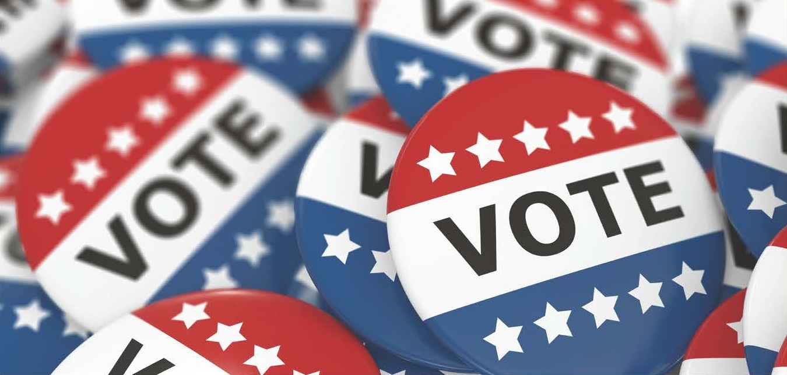
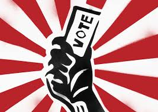

Potential Applications
Why website?
If we make it for easier and streamline the process of voting, more people will turn out to vote and it is always a good sign when more people come out and vote as politicians will be held more accountable, real change can be brought about and the voice of the people will be loud and clear!.
A website that tracks local congressman.
what is the app's purpose?
-Tracks your local congressman and his voting record and legislation
How would someone use it?
-They would have to give location permission and all data about their local congressman would be displayed
Why would it be useful?
-It would be useful to see how the person you voted for is doing and if he is sticking to his platform
govetrack.us is a website that has the data but it is not personalized.

-They would enter the issues they are interested in and it would recommend a congressman
-It would be useful for young people and people who are new to voting
This website contains the list of the candidates and their platform is not customized nor contains the candidate platform.
A website that recommends whom to vote for based on interesting issues.
what is the app's purpose?
-This app recommends a candidate you could vote for based on your interests
How would someone use it?
-They would enter the issues they are interested in and it would recommend a congressman
Why would it be useful?
-It would be useful for young people and people who are new to voting
This website contains the list of the candidates and their platform is not customized nor contains the candidate platform.

This website contains important voting information but it is too general. My application can recommend the steps needs to be taken based on your current situation and position.
A website that shows important information for voting like registration, deadlines, paperwork, the location of booth etc.
what is the app's purpose?
-To help new potential voters register and vote in time!what is the app's purpose?
-They would give their location permission, and based on a customized checklist, they will be given directions on what to do next in order to vote in time.what is the app's purpose?
-It would be useful for potential voters by making information accessible.This website contains important voting information but it is too general. My application can recommend the steps needs to be taken based on your current situation and position.